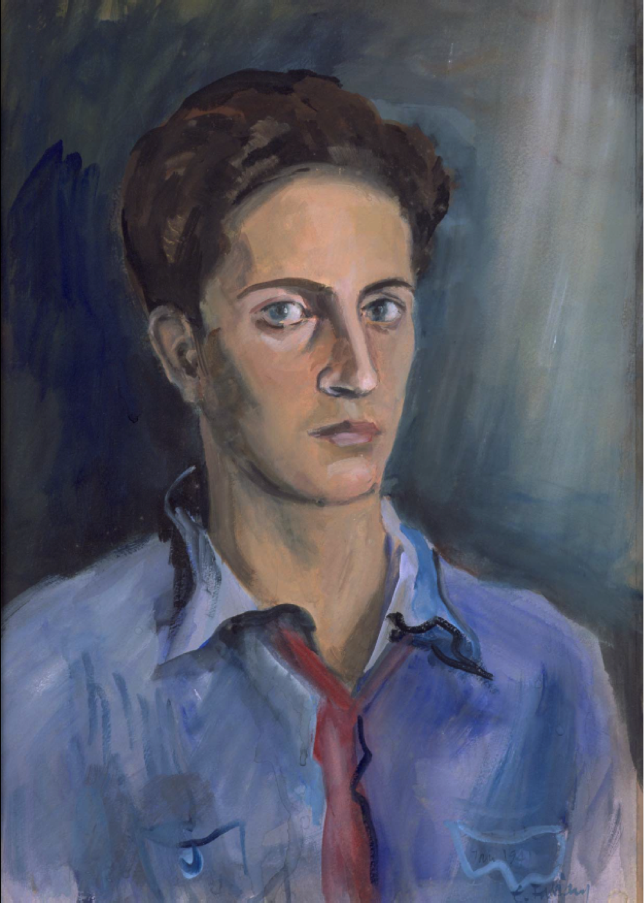
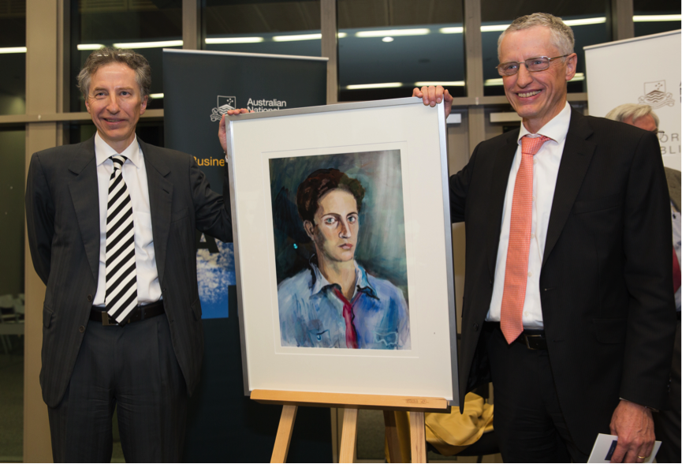

Last night I attended the unveiling of a facsimile of a portrait of my father painted when he was fresh off the boat in 1941. Thanks go to Bruce Chapman above all, but to many others for organising. To Erwin Fabian, who pained the portrait all those years ago. It's been over 16 years since Dad departed and I've made two other speeches reflecting on things, one at his memorial after he died, another, more general one using Dad as a foil to reflect on 'the asylum seeker issue'. I needed to make another one!
https://www.youtube.com/watch?v=9nEviUDc-HQ
I.
When Heinrich Schliemann unearthed a gold mask in Mycenae, he was reputed to have said “I have gazed on the face of Agamemnon”. In a more modest way Erwin Fabian’s magnificent portrait allows us to gaze back through time – upon the face of a very different person to the one we all knew.
When Dad arrived in England in 1936, he was 15 and alone. He must have been scared. Met by a teacher from Herne Bay College where he was to board, Dad had no English. “Salve” he said, greeting the teacher in Latin. No dice: He was the gym instructor.
The portrait was painted just four months after the Dunera arrived. To find him in those days you just followed the signs in the main street of Hay to the “Concentration Camp”. Dad must have wondered where his mother Marianne was; how she was. She was taken to Theresienstadt. It was a way station to Auschwitz.
It also had creepy similarities to Hay. Theresienstadt was Hitler’s home for Europe’s Jewish cultural elite. So, as the inmates quietly starved, it doubled as a set for Nazi propaganda showing how well Jewish ‘resettlement’ was going. As she waited to discover her fate, Marianne would sometimes have attended lectures, recitals, poetry readings, and concerts, just as Dad was doing in Hay.
II.
I’ll return to the person in the portrait shortly, but I thought I’d list some propositions I take from my father’s success.
- You make your own life
- But look after people
- Knuckle down. Work hard. Get on with things
- But don’t be a workaholic
- Take yourself seriously
- But not too seriously
- Don’t be shy. Chat with strangers.
- If you’re nice to them, they’ll probably like you
- Believe in, invest in, your own integrity and that of others.
- Don’t get on your high horse or start a fight unless it really matters
- You’ll know it really matters if, maybe only if, real injustice is done to someone who can’t easily defend themselves
- If you want your intellect to make a positive contribution to people’s lives, the trick is to combine a warm heart with a cool head.
- There is no shortage of people with exceptional intelligence and no damn sense
- Listen carefully to those who disagree with you.
- Listen like they might even be right.
- Build, don’t destroy
- But turn your back on things if you have to
- Appreciate life
- It ends
III
To me anyway, it’s important to remember that, however accomplished Dad was, however enjoyable his company, however much Max Corden praised his scrupulousness as a scholar, describing him as a one person Royal Commission, it was all built on the normal human difficulties and frailties.
In the last month or so we had plenty of long talks. In one he said “That’s the last time I really understood you. When you punched a hole in the wall of your room. That was the sort of thing I might have done at that age. Later I decided I needed to knuckle down. Work hard. Get on.”
The thing was . . . I’d not punched a hole in the wall. In a move that can only be fully appreciated with some understanding of adolescent AFL fans, in the dying moments of some unspecified Grand Final, I’d taken a magnificent ‘speckie’, descending from my ecstasy into the softness of my bed, only to learn that I’d not defied gravity by digging my knee into some obliging opponent’s back. I’d simply thrust it through the accommodating canite of my bedroom wall.
IV
At Dad’s memorial I read a Yiddish poem from the child of Holocaust survivors:
Sleep my dear parents but do not dream.
Tomorrow your children will shed your tears
I recall five years later – perhaps ten – sitting in a barber’s chair and some unusual – indeed ridiculous – facts came to mind. I fantasised again, not, this time the unheralded adolescent superhero. I’d become a great poet (again mysteriously undiscovered). I was composing a great poem that would uncover the sublime from the ridiculous.
The pity of it is, as you will appreciate, I’m no poet. I barely understand a lot of poetry. Still, sometimes a poem speaks for itself. As when I first heard this extraordinary fragment – a single sentence in eight lines of free verse – tossed off by John Keats in the margin of a page on which he’d been writing another, longer poem. Keats was 23, desperately in love with Fanny Brawne. And he knew he was dying:
This living hand, now warm and capable
Of earnest grasping, would, if it were cold
And in the icy silence of the tomb,
So haunt thy days and chill thy dreaming nights
That thou would wish thine own heart dry of blood
So in my veins red life might stream again,
And thou be conscience-calm’d – see here it is –
I hold it towards you.
What did Keats mean by this last gesture, reaching across the chasm separating the living from the dead?
In any event, as the barber snipped away, tears swept down my cheeks, my mind flooding with grief for my father, rekindled by the beauty of this poem I’d never write. Self-conscious, I added to the surrealism of the occasion by managing to smile: Beatific, if somewhat zoned-out. The bemused barber asked if I was OK. “I’m fine” I said with such nonchalance that I surely convinced him, however momentarily, that his customers usually haemorrhaged tears, smiling blankly into his mirror.
The poem might have been called “Three moustaches: Three ages of man”. I expect moustaches were more important for the generation of my Dad’s father Willi than they were for Dad’s. In any event as a newlywed, Dad briefly experimented with growing a moustache. He and Mum both agreed it looked ridiculous.
Unable to grow their own, Dad’s young sons urged him to grow it once more. It was a long time coming. Then, with David and I in our twenties, on a cruise to Hong Kong and perhaps the last time we spent any sustained time together as a family, Dad’s moustache arrived unannounced; initially unnoticed, but then unmistakable, becoming quite the full huntsman spider in the middle of his handsome face, before yielding, perhaps to my mother's conviction that it was as ridiculous then as it had ever been.
Then within a week or two of the end … the professor dying … that moustache crept up on us again, initially mistaken for some slip in Dad’s shaving routine. But after the second day and until his death, and in the coffin as he lay there, it stared back at us – as mysterious as it was unmistakable.
We can only speculate about what it meant – on what he meant. I guess like Keats, he was trying to say something across the chasm.
He was saying:
“See here it is. I hold it towards you.”
He was reminding us, that no matter how much we love someone, they always remain, as life remains . . . a mystery.

Thank you for sharing this, Nick. How lucky Australian was to get your father and the other Dunnera Boys. And now their children and grandchildren.
I listened to Occam's Razor on Radio National this am to hear Prof Michael Molitor of the Paris based International Energy Program, SciencesPo, who is currently a Visiting Professor at the UNSW, talk amongst other things glowingly, of the Genuine Progress Indicator (GPI) as a more appropriate measure of our economic and social wellbeing, Naturally that lead to a Google search as to what might be the thinking in Australia. That lead me amongst others to this site and your observations.....I had no idea who you were, though I have heard your name before....so that lead to "ABOUT" and this post. What an amazing post. We are told to "Honour our fathers and mothers that their days may be long". You have done that will great love and sensitivity. I would wish all your fathers descendants a long life. Perhaps a further post on GPI on this site following consideration of Michael Molitor's thoughts might be considered. Kind Regards
Thanks very much Larry,
I've got quite strong views about the GPI. It's a nice idea, but very ideologically biased to generate the desired answer - that progress wasn't as fast as GDP said it was. I explained that here, here and here.
I've since been given the chance to build an index that I think addresses these problems - though of course, like any single index it requires Herculean assumptions. Anyway, if you search for the "HALE Index" you'll find a fair bit on it - it's published each quarter by the Herald and the Age (The 'H' and 'A' of the HALE, the other two letters standing for 'Lateral Economics'). And there's a general article on the way it was built here (pdf). The full report documenting the methodology is here.
By the way, Larry, I may have read your comment a little quickly and thought you hadn't seen my comments. I think you had. In any event, there's a fairly comprehensive list of my utterances on the subject.
Anyway, I'll listen to the program as you suggest and have downloaded it onto my mp3 player.
Thank you Nicholas for a beautiful piece of writing. Another one, this time more personal. You may be wary of poetry, but your writing is just as able to touch emotions and tickle the edges of philosophies.
Lovely piece. You do have a great gift there. I've written about my own Dad, but much more prosaically, but then he was a prosaic guy.
Ah, Fred, if only we'd had more time together.
Your father was a generous man. I learned a great deal just listening to him discussing issues with Ian Castles at PM&C drinks in West Block in the mid-1970s. Later at ANU he supported the policy research work a group of us were doing in DSS, kindly referring to the papers Judy Raymond, Wayne Jackson and I were writing on tax and social security as the 'PRJ' papers.